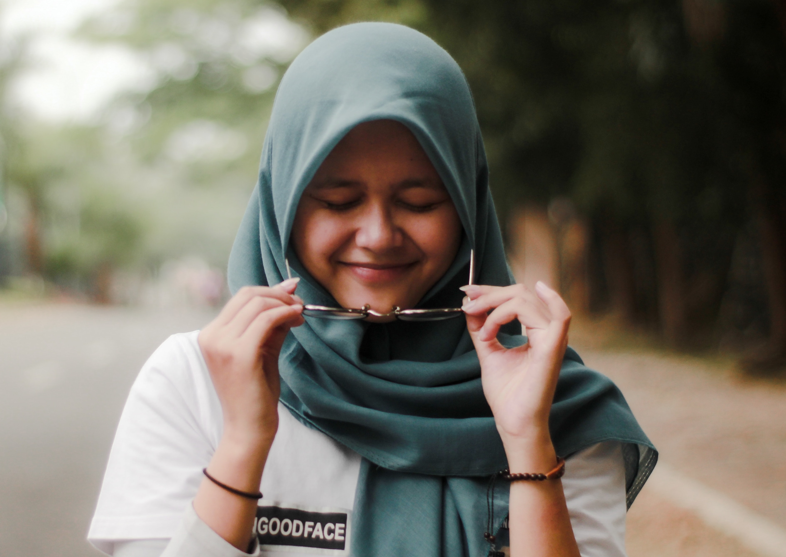
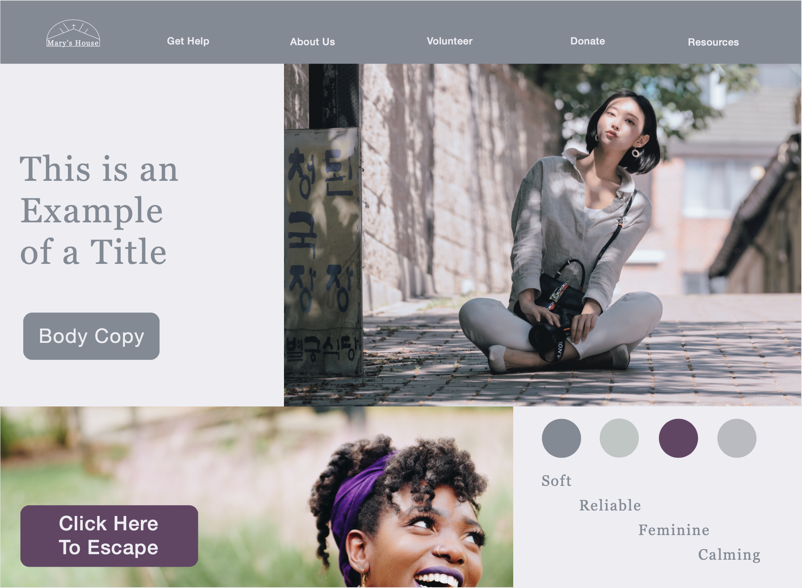

Solution
Now That I Have Gathered This Information, What Do I Do With It?

I wanted my new spin on this website to be calming, so I chose calming but still feminine colors. I kept a purple because a purple ribbon represents domestic abuse but desided to tone it down. I wanted to have uplifting imagery of women to give a sense of hope. The type is feminine but not over whelming and is legable.
Call To Action
My main call to action would be a button that would allow women to escape the website quickly. The secondary would be a button titled 'get help' that would lead to a webpage where a women in danger could find resorces not only for Mary's House but for other charities that would cover a wide range of needs she may have.